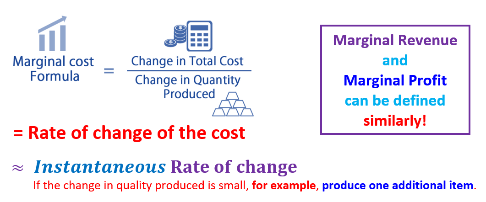

Topic 7 Derivative of Logarithmic and Exponential Functions
7.1 Review Topics
- Definitions of Log and Exponential Functions
- The basic properties of natural logarithmic and exponential functions are summarized in the following.
 Example 1:
Example 1:
Five Rules of Derivative
Power Rule: \([x^a]^\prime = a x^{a-1}\).
Additive Rule: \([f(x) + g(x)]^\prime = f^\prime(x) + g^\prime(x)\).
Multiplicative Rule: \([f(x)g(x)]^\prime = f^\prime(x)g(x) + f(x)g^\prime(x)\).
Quotient Rule: \([f(x)/g(x)]^\prime = [f^\prime(x)g(x) - f(x)g^\prime(x)]/g^2(x)\).
Chain Rule: \([f\circ g (x)]^\prime = f^\prime[g(x)] g^\prime(x)\).
Example 2: (1). \(f_1(x) = \sqrt[5]{x^3}\), (2). \(f_2(x) = (x^2+1)\sqrt{x}\), (3). \(f_3(x) = x^2/(x+1)\), (4). \(f_4(x) = (1/x+1)^2\)
7.2 Derivative of Natural-base Exponential Functions
Theorem 1: Let \(f(x) = e^x\), then \(f^\prime(x) = [e^x]^\prime = e^x\).
Example 1: Find the derive of the following functions (that contains \(e^x\)).
(1). \(y = 3e^x\)
(2). \(f(x) = x^2e^x\)
(3). \(h(x) = e^x/x^3\)
Solution: Each of the above functions contains more than one component. To find the derivative of these functions, we need to use rule \([e^x]^\prime = e^x\) and other rules of derivative as well.
(1). \(y\) involves scalar multiplication. \(y^\prime = [3e^x]^\prime = 3[e^x]^\prime = 3e^x\).
(2). \(f(x)\) is a product of two functions. \(f^\prime(x) = [x^2e^x]^\prime = [x^2]^\prime e^x + x^2 [e^x]^\prime = 2xe^x + x^2e^x=x(2+x)e^x\)
(3). \(h(x)\) is a fractional function. \(h^\prime(x) = [e^x/x^3]^\prime = [(e^x)^\prime x^3 - e^x(x^3)^\prime]/x^6 = (x - 3)e^x/x^4\)
The problems in the above example contain \(e^x\) as a component. Recall that the compounding interest example we discussed earlier has the general form \(A(t) = Pe^{rt}\), where \(A(t)\) is the account balance at the end of \(t\) years, \(r\) is the annual rate, \(t\) is the number of years of investment. This investment function contains \(e^{rt}\). We need to know the derivative of \(f(x) = e^{g(x)}\), where \(g(x)\) is differentiable (i.e., the derivative of \(g(x)\) exists).
Theorem 2: Let \(f(x) = e^{g(x)}\), then \(f^\prime(x) = [e^{g(x)}]^\prime = e^{g(x)}\times g^\prime(x)\).
The above theorem is essentially an application of the chain rule to the general natural base exponential function. The following figure illustrated the use of the above theorem with an example.
Example 3: Find the derivative of the following functions.
(1). \(f(x) = e^{8x}\)
(2). \(f(x) = e^{-x^2 + 4x -7}\)
(3). \(f(x) = e^{\sqrt{x^2-3}}\)
Solution: We need to use result in Theorem 2 and other rules of derivative.
(1). \(f^\prime(x) = [e^{8x}]^\prime = e^{8x}\times (8x)^\prime = 8e^{8x}\).
(2). \(f^\prime(x) = [e^{-x^2 + 4x -7}]^\prime = e^{-x^2 + 4x -7}(-x^2 + 4x -7)^\prime = 2(2-x)e^{-x^2 + 4x -7}\)
(3). \(f^\prime(x) = [e^{\sqrt{x^2-3}}]^\prime = e^{\sqrt{x^2-3}}\times(\sqrt{x^2-3})^\prime\)
\(=e^{\sqrt{x^2-3}}\times [(x^2-3)^{1/2}]^\prime =e^{\sqrt{x^2-3}}\times (1/2)\times (x^2-3)^{1/2-1}(x^2-3)^\prime\)
\(=\frac{1}{2}e^{\sqrt{x^2-3}}\times (x^2-3)^{-1/2}\times(2x) = \frac{xe^{\sqrt{x^2-3}}}{\sqrt{x^2-3}}\)
Example 4: Franco’s Fishing Emporium invested $50,000 in an account that earns 1.25% annual interest, compounded continuously. The value of the account after \(t\) years is given by
\[ A(t) = 50000e^{0.0125t} \]
Find \(A(5)\) and \(A^\prime(5)\) and interpret the meaning of each of these values.
Solution: To find \(A(5)\), we simply substitute \(t = 5\) n \(A(t)\) that gives \[ A(5) = 50000e^{0.0125\times 5} \approx 53224.72. \] Note that,
The derivative \(A^\prime(t)\) can be found in the following.
Therefore,
After exactly 5 yr, the value of Franco’s Fishing Emporium’s account is $53,224.72, and at that instant, the value is growing at the rate of $665.31 per year.
7.3 Derivative of Natural Logarithmic Functions
Note that \(f(x) = \ln(x)\) is equivalent to \(e^{f(x)} = x\). Taking the derivative of both sides of the above equation, we have
\[ [e^{f(x)}]^\prime = [x]^\prime \] that is equivalent to
\[ f^\prime(x) e^{f(x)} = 1, \ \ \text{ that is, } \ \ x f^\prime(x) = 1 \ \ \text{ since } e^{f(x)} = x. \]
Therefore,
\[ f^\prime(x) = [\ln(x)]^\prime = \frac{1}{x}. \] Using the same steps, we have
\[ [\ln f(x)]^\prime = \frac{f^\prime(x)}{f(x)}. \]
In summary, we have the following formulas
Example 5 Find the derivative of the following functions
(1). \(y = 3\ln (x)\).
(2). \(y = x^2/\ln (x)\).
(3). \(y = x^4\ln(x) + 5x\)
Solution: We will use the above theorem and the five rules (power rule, scalar multiplication, additive, multiplicative, quotient, and chain rules) of derivatives as well.
(1). \(y^\prime = [3\ln (x)]^\prime = 3[\ln (x)]^\prime = 3\times \frac{1}{x} = \frac{3}{x}\).
(2). \(y^\prime = [x^2/\ln (x)]^\prime = \frac{[x^2]^\prime \ln(x) - x^2[\ln(x)]^\prime}{[\ln(x)]^2} = \frac{2x\ln(x)-x^2(1/x)}{[\ln(x)]^3} = \frac{x[2\ln(x)-1]}{[\ln(x)]^2}\).
(3). \(y^\prime = [x^4\ln(x) + 5x]^\prime = [x^4\ln(x)]^\prime + [5x]^\prime = [x^4]^\prime\ln(x) + x^4[\ln(x)]^\prime + 5\)
\(= 4x^3\ln(x) + x^4(1/x) + 5 = 4x^3\ln(x) + x^3 + 5 = x^3[4\ln(x)+1]+ 5\)
Example 6: Find the derivative of the following functions.
(1). \(y = \ln(x^2-1)\)
(2). \(f(x) = \ln[(x^3 + 4)/x]\)
Solution: We need the chain rule (the second part of the theorem) and other rules of derivative.
(1). \(y^\prime = [\ln(x^2-1)]^\prime = \frac{(x^2-1)^\prime}{x^2-1} = \frac{2x}{x^2-1}\)
(2). Method 1: We start with the chain rule. \(f^\prime(x)= \{\ln[(x^3 + 4)/x]\}^\prime = \frac{[(x^3 + 4)/x]^\prime}{(x^3 + 4)/x} = \frac{([(x^3 + 4)^\prime x- (x^3+4)(x)^\prime]/x^2}{(x^3 + 4)/x}\)
\(= \frac{([3x^3\times x- (x^3+4)]/x^2}{(x^3 + 4)/x} = \frac{3x^4- x^3-4}{x(x^3 + 4)}\)
We can use the property of the logarithmic function to simplify the given function and then take the derivative.
Method 2: We simplify the function before taking derivatives. \(f^\prime(x)= \{\ln[(x^3 + 4)/x]\}^\prime = [\ln(x^3 + 4) - \ln(x)]^\prime\)
\(= [\ln(x^3+4)]^\prime -[\ln(x)]^\prime= \frac{(x^3+4)^\prime}{x^3+4} +\frac{1}{x} = \frac{3x^2}{x^3+4} - \frac{1}{x} = \frac{3x^3-x^3-4}{x(x^3+4)}\)
Example 7: Marginal Cost. Suppose \(C(x)\) is the total cost of producing \(x\) skateboards and
\[ C(x) = 1800 + 10x + 0.02x^2 \ \text{dolloars} \] (1). Find the marginal cost function.
(2). Find the marginal cost at \(x= 500\) and interpret the result.
Solution: Before answering the above two questions, we need to know what the marginal cost is and how the marginal cost is defined. The following figure defines the marginal cost.

The marginal revenue, cost, and profit functions are what the company can use to determine whether or not it should increase production. These marginal functions are the derivatives of their associated functions. So
the marginal revenue function is the derivative of the revenue function, \(MR(x) = R^\prime(x)\);
the marginal cost function is the derivative of the cost function, \(MC(x) = C^\prime(x)\);
the marginal profit function is the derivative of the profit function, \(MP(x) = P^\prime(x)\).
With the above concepts of marginal cost, we now answer the above questions.
(1). The marginal cost function, denoted by \(MC(x)\), is given by
\[ MC(x) = C^\prime(x) = [1800 + 10x + 0.02x^2]^\prime = 10 + 0.04x \]
(2). \(C^\prime(500) = 10 + 0.04\times 500 = 10 + 20 = 30\). This means, at the current production capacity (of producing 500 items), producing one additional item will increase an additional $30 cost.
7.4 Exponential Models
The follow theorem defines a very commonly used exponential models.
If \(k > 0\), the corresponding model is called exponential growth model. If \(k < 0\), the exponential model is called exponential decay model.
7.4.1 Exponential Growth Model
Consider the investment function in Example 4, \(A(t) = 50000e^{0.0125t}\), where \(t\) is the number of years. We also calculated the derivative \(A^\prime(t) =0.0125 \times 5000e^{0.0125t}\).
Observe that \(A^\prime(t)\) and \(A(t)\) have a direct relationship: \(A^\prime(t) = 0.0125A(t)\). In general, if a function \(y = f(x)\) that \(f^\prime(x) = k f(x)\) (\(k\) is a constant), we call it the exponential growth model. We formalized this observation in the following theorem (without proving it)
If \(k > 0\), the corresponding exponential growth model has no upper bound. It is usually called the uninhibited Population Growth Model. The constant \(c\) is the initial value at \(t = 0\).
Example 8: Business: Interest Compounded Continuously. Suppose \(P_0\), in dollars, is invested in the Von Neumann Hi-Yield Fund, with interest compounded continuously at \(7%\) per year. That is, at any point in time after \(t\) years, the balance \(P\), in dollars per year, is growing at the rate
\[ \frac{dP(t)}{dt}=0.07P(t) \]
(a). Find the function that satisfies the equation. Write it in terms of \(P_0\) and 0.07.
(b). Suppose that $10,000 is invested. What is the balance after 1 yr?
(c). If $10,000 is invested, how fast is the balance growing at \(t=1\) year?
Solution. Use the above Theorem 3 and a calculator to answer the three questions.
(a): According to the theorem, \(P(t) = P_0 e^{0.07t}\)
(b): Since \(P(t) = 10000e^{0.07t}\), therefore, \(P(1) = 10000e^{0.07\times 1} = 10000e^{0.07} \approx 10725.0818125422 \approx 10725.08 \text{ dollars}\).
(c): Since \(P^\prime(t) = 10000e^{0.07t}\times 0.07 = 700e^{0.07t}\). Therefore, \(P^\prime(1) = 700e^{0.07\times 1} = 700e^{0.07} \approx 750.755726877952 \approx =750.76\) dollars. At \(t = 1\), the balance is growing at the rate of about $750.76 per year.
7.4.2 Exponential Decay Models
Example 9 Population decay. Since 1980, the population of Trenton, New Jersey, has been decreasing by \(2.72\%\) per year. The rate of change of the city’s population P, t years after 1980, is given by
\[ \frac{dP}{dt} = -0.0272 \]
In 1980, the population of Trenton was 92,124. (Source: U.S. Census Bureau.)
(a). Find an exponential function that models this situation.
(b). What is the rate of change of the population of Trenton in 2030?
Solution: By the above